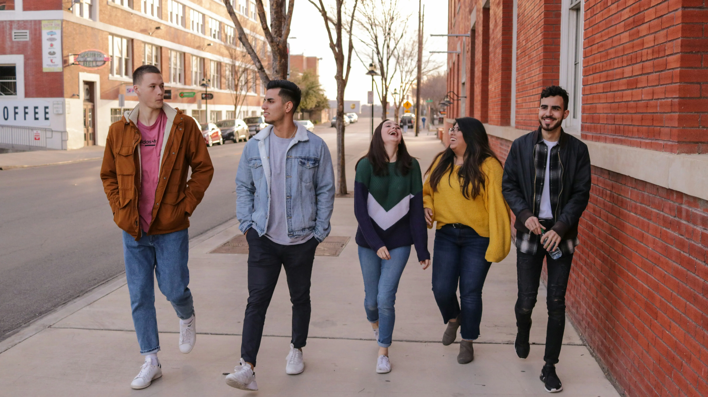

ZeroBuzz Brew blev grundlagt i 2018 af en gruppe passionerede ølentusiaster med en vision om at
revolutionere bryggerimarkedet ved at tilbyde et lækkert og sundt alternativ til
traditionelle øl. Inspireret af den stigende interesse for en sundere livsstil og et bevidst
forbrug, besluttede de at fokusere på at udvikle og brygge alkoholfri øl, der ikke går på
kompromis med smag og kvalitet.
